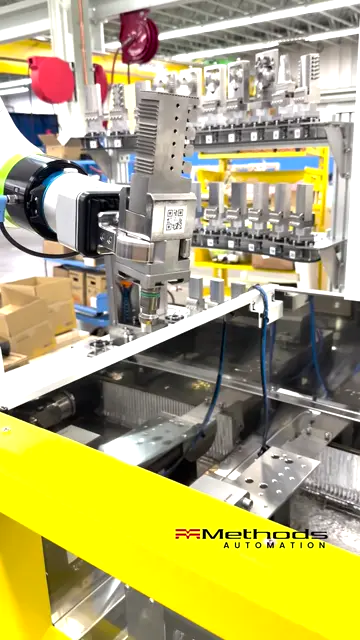
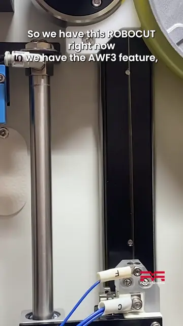
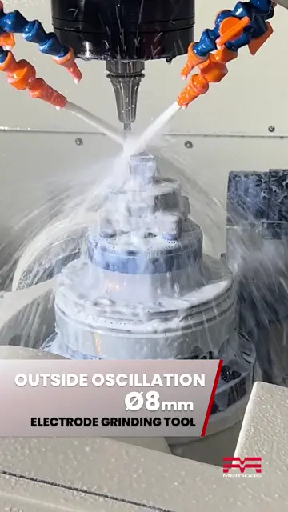
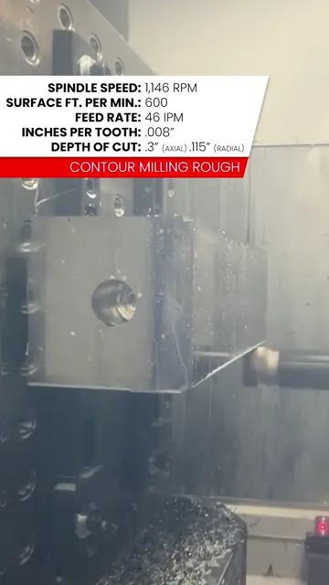
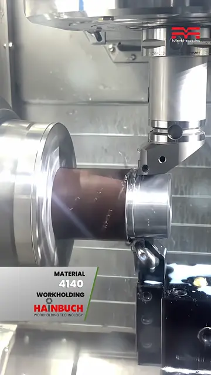

CNC machine sales · Worldwide
CNC Machines for Manufacturers Worldwide
Machining centers, multitasking turning centers, wire EDM and grinding machines from FANUC, Nakamura-Tome, YASDA, OKK, KIWA and United Grinding.
Machine lines
Machine lines available through Innovative Machinery.

FANUC ROBODRILL
Compact vertical machining centers for high-speed milling, drilling and tapping.
View line →FANUC ROBOCUT
Wire EDM, with 10-second automatic wire threading for long unattended runs.
View line →Nakamura-Tome
Multitasking turning centers and mill-turns.
View line →YASDA
High-precision machining centers, including 5-axis models.
View line →
OKK
Horizontal, vertical and 5-axis machining centers from Nidec OKK.
View line →KIWA
Horizontal and vertical machining centers, including two-pallet models.
View line →
United Grinding
Grinding machines, including STUDER cylindrical grinders and Walter tool grinders.
View line →- Not sure which line?
Discuss your application
Share your part, material and production volume to identify the right machine for the job.
Get in touch →
Machines in action
Short clips of these machines at work. Tap to watch on YouTube.

FANUC ROBOCUTLights-out wire EDM automation
FANUC ROBOCUT10-second auto wire threading
YASDACutting cemented carbide, no edge chipping
KIWA KH4100kai45 lb 4140 manifold block, 2APC
Nakamura-Tome JX-200Hobbing, skiving and multitasking OKK HMC500Big Plus spindle cutting 1020 steel
OKK HMC500Big Plus spindle cutting 1020 steel FANUC RoboDrill + CRXThe Sidekick cobot cell
FANUC RoboDrill + CRXThe Sidekick cobot cell FANUC RoboDrillMilling 4140 with a 40 mm tool
FANUC RoboDrillMilling 4140 with a 40 mm tool
Request a Quote
Share your part, material, production volume and location. We will follow up by email.